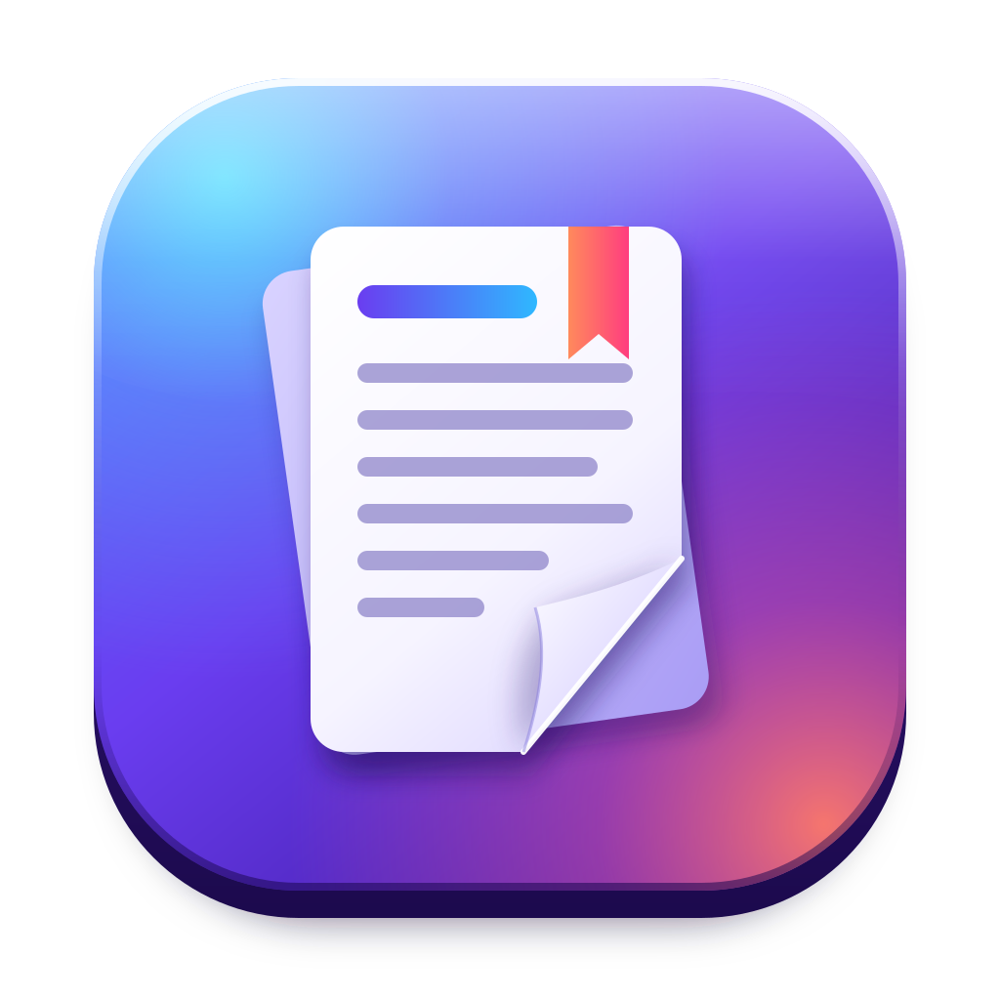
MyEBookReader 프로그램 설명서
PDF · EPUB · MOBI · AZW3 · DjVu · FB2 · CBZ 를 페이지 넘김 효과와 함께 읽고, 형광펜을 칠하고, 글자와 그림을 꺼내 쓰는 리더 — 버전 1.0.2 · Windows · macOS · Linux · 웹 브라우저
1. 소개
MyEBookReader는 PDF · EPUB · MOBI · AZW/AZW3(Kindle) · DjVu · FB2 · CBZ · TXT · Markdown · HTML 등 여러 형식의 전자책을 한 프로그램에서 읽는 리더입니다. 어떤 형식이든 한 쪽씩 · 두 쪽씩 넘겨 읽으며 같은 페이지 넘김 효과가 적용되고, 형광펜 · 책갈피 · 텍스트와 그림 복사 · 찾기 · 인쇄가 PDF와 똑같이 동작합니다.
- EPUB · MOBI 같은 흐르는 글은 열 때 쪽으로 나누고, 툴바의 aA 로 글자 크기를 바꿀 수 있습니다.
- 열어 본 책은 열어 본 파일에 저절로 모이고, 아끼는 책은 서재에 꽂아 책장처럼 봅니다.
- PDF의 형광펜은 파일 안에, 다른 형식의 형광펜은 작업 파일(
.ebkvw)에 저장됩니다.
2. 화면 구성
제목 표시줄
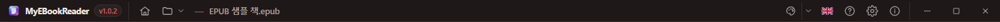
프로그램 전체에 관한 버튼은 맨 위 제목 표시줄에 있습니다. 툴바에는 지금 읽는 책을 다루는 버튼만 남겼습니다.
| 버튼 | 하는 일 |
|---|---|
| 홈 | 켜고 끄는 버튼 — 누르면 시작 화면, 다시 누르면 읽던 화면으로 돌아갑니다. |
| 파일 ▾ | 열기 (Ctrl+O) · URL 열기 · 저장 · 다른 이름으로 저장 · 파일 첨부 · 작업 파일 저장 · 텍스트 내보내기 · 인쇄, 그리고 최근 파일 목록 (☆ 서재에 추가, 휴지통으로 하나씩 · 전체 지우기). |
| 테마 | 누를 때마다 다음 테마로 바뀝니다. 오른쪽 ▾ 의 목록은 맨 위에 사용자 정의 테마와 설정 버튼(사용자 정의 테마 만들기), 그 아래 Dark 20가지, 다시 그 아래 Light 20가지를 두 줄로 보여 줍니다. |
| 언어 (국기) | 한국어 ↔ English. 국기는 바꿀 언어를 보여 줍니다. |
| 도움말 · 설정 · 프로그램 정보 | 이 설명서, 설정 창, 버전과 만든 이 정보. |
툴바
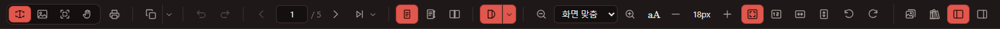
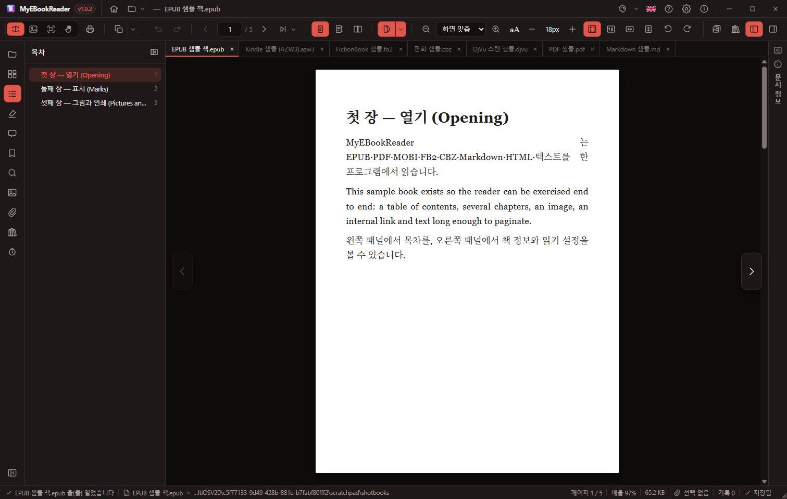
3. 시작 화면
프로그램을 켜면 시작 화면이 나옵니다. 제목 표시줄의 홈 버튼으로 언제든 다시 엽니다.
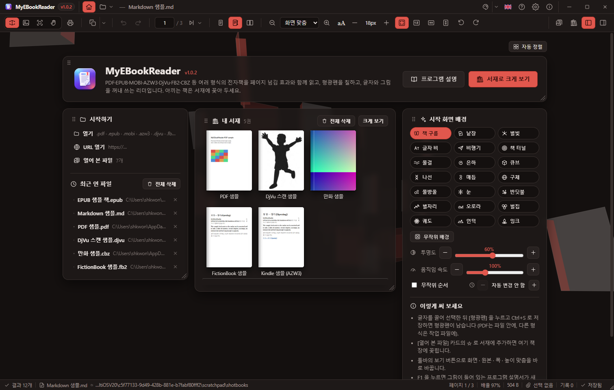
- 시작하기 — 열기, URL 열기, 열어 본 파일.
- 최근 연 파일 — 각 줄의 ✕ 로 하나씩, 제목 오른쪽 🗑 전체 삭제 로 목록 전체를 지웁니다. 파일 자체는 지워지지 않습니다.
- 내 서재 — 서재에 넣은 책이 표지로 보입니다. 🗑 전체 삭제 로 서재를 비우고, 크게 보기 로 서재 화면을 엽니다.
- 위쪽 카드의 [프로그램 설명] 은 이 설명서를, [서재로 크게 보기] 는 서재를 엽니다.
- 패널 옮기기 · 크기 바꾸기 — 각 패널 제목 맨 앞의 ⠿ 손잡이(제목 카드는 왼쪽 위)를 끌면 패널이 옮겨지고, 오른쪽 아래 모서리를 끌면 크기가 바뀝니다. 바꾼 배치는 기억됩니다.
- 자동 정렬 — 시작 화면 오른쪽 위의 ⊞ 자동 정렬 을 누르면 패널이 처음 배치로 돌아갑니다.
- 홈 버튼은 켜고 끄는 방식입니다 — 눌러진 동안 시작 화면을 보여 주고, 다시 누르면 책을 읽던 화면(책이 없으면 빈 화면)으로 돌아갑니다.
- 최근 연 파일과 서재의 책에서 오른쪽 클릭하면 열기 · 서재에 추가 / 빼기 · 최근 기록에서 지우기 · 폴더에서 보기 · 경로 복사 메뉴가 나옵니다.
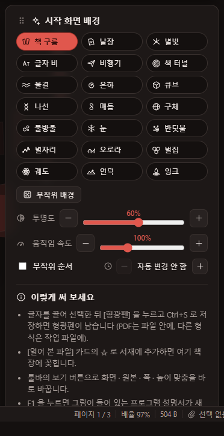
책 구름 · 낱장 · 별빛 · 글자 비 · 은하 · 오로라 · 잉크 등 읽기와 책을 주제로 한 21가지 3D 배경 가운데 하나를 고릅니다.
- 무작위 배경 · 투명도(10–100 %) · 움직임 속도(10–300 %)
- 자동 변경 — 15초 ~ 5분마다 배경을 바꾸고, 무작위 순서 를 켜면 순서 없이 바뀝니다.
4. 책 열기
- 파일 ▾ → 열기 (Ctrl+O) — 열기 창의 형식 목록에서 책과 작업 파일 · PDF · EPUB · Kindle · DjVu · FictionBook · 만화 · 글 · 그림 가운데 고를 수 있습니다. 여러 개를 고르면 탭으로 열립니다.
- 끌어 놓기 — 탐색기에서 책 파일을 창으로 끌어 옵니다.
- URL 열기 — 인터넷 주소의 책을 내려받아 엽니다.
- 폴더 패널 — 왼쪽 패널의 폴더 탭은 PDF · EPUB · MOBI · AZW · AZW3 · DjVu · FB2 · CBZ 파일을 보여 줍니다.
- 설치할 때 전자책의 기본 리더로 설정을 고르면 EPUB · MOBI · AZW3 · DjVu · FB2 · CBZ 를 두 번 눌러 엽니다. PDF는 [연결 프로그램] 목록에만 추가됩니다.
5. 읽을 수 있는 형식
| 형식 | 확장자 | 참고 |
|---|---|---|
.pdf | 형광펜 · 주석을 파일 안에 저장할 수 있습니다. | |
| EPUB 2 / 3 | .epub | 목차, 표지, 그림, 장 사이 링크. |
| Kindle | .mobi .azw .azw3 .kf8 .prc | MOBI 6 · KF8 · 둘을 함께 담은 파일, HUFF/CDIC 압축. DRM 이 걸린 파일과 KFX 는 열 수 없다고 알려 줍니다. |
| DjVu | .djvu .djv | 스캔한 쪽 그림. OCR 글자 층이 있으면 선택 · 찾기 가능. |
| FictionBook | .fb2 .fb2.zip | 시 · 제사(epigraph) · 그림 포함. |
| 만화 | .cbz | 그림 하나가 한 쪽. RAR 만화(.cbr)는 ZIP으로 바꾸어 여세요. |
| 글 | .txt .md .html | 제목으로 장을 나눕니다. |
| 그림 | .png .jpg .gif .webp .bmp .tif | 한 장짜리 책. |
확장자가 틀려도(예: EPUB인데 .txt) 파일 내용을 보고 알맞게 엽니다. 책에 들어 있던 글꼴 · 색 · 여백 서식은 쓰지 않고 읽기 좋은 본문 서식으로 보여 줍니다.
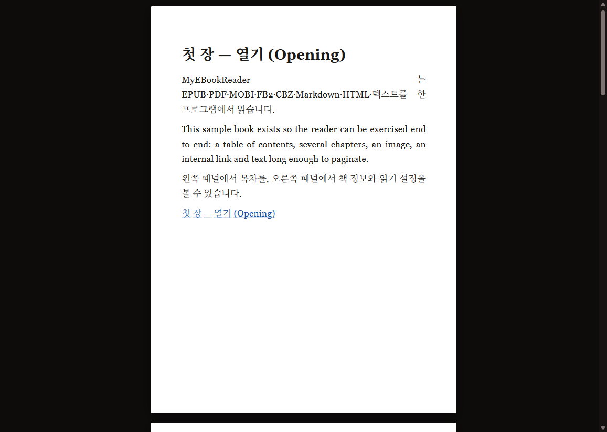
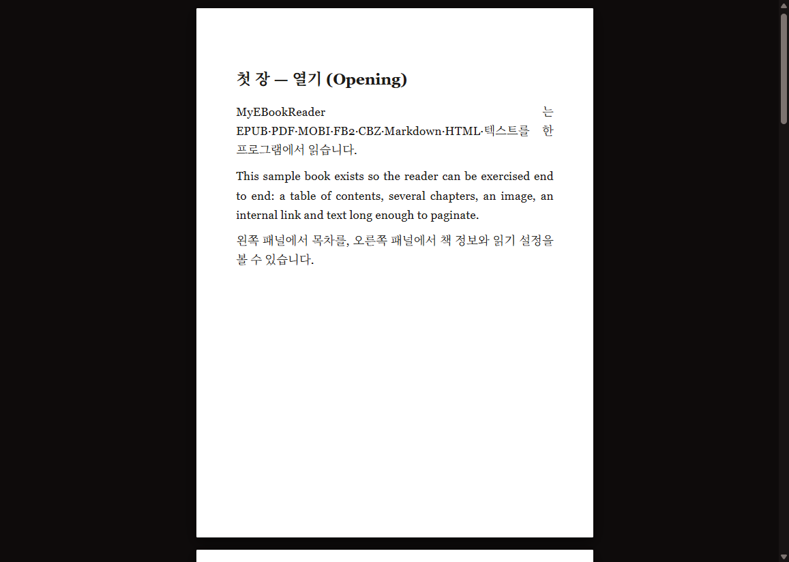
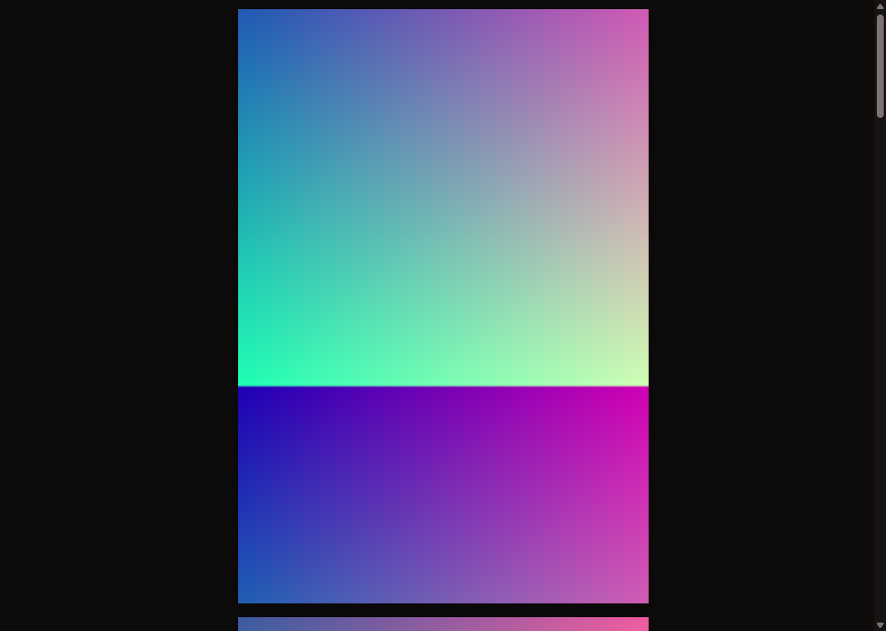
6. 페이지 넘김 효과
툴바의 페이지 배치를 한 페이지씩 또는 두 쪽 보기로 두면, 쪽을 넘길 때 고른 효과가 모든 형식에 똑같이 적용됩니다 (이어보기에서는 스크롤합니다). 넘김 효과 버튼을 누를 때마다 없음 → 페이드 → 밀기 → 넘기기 순서로 바뀌고, ▾ 로 목록에서 고를 수도 있습니다.
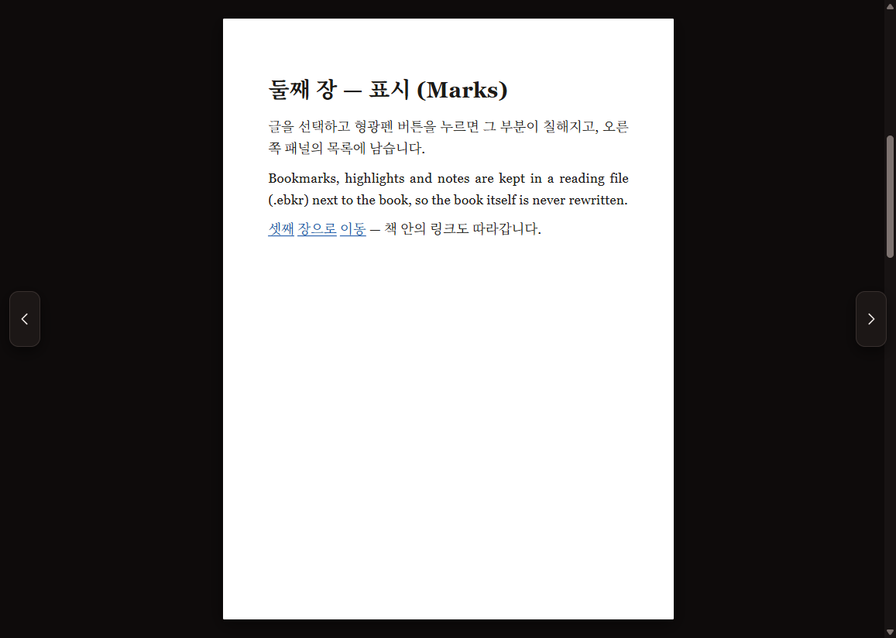
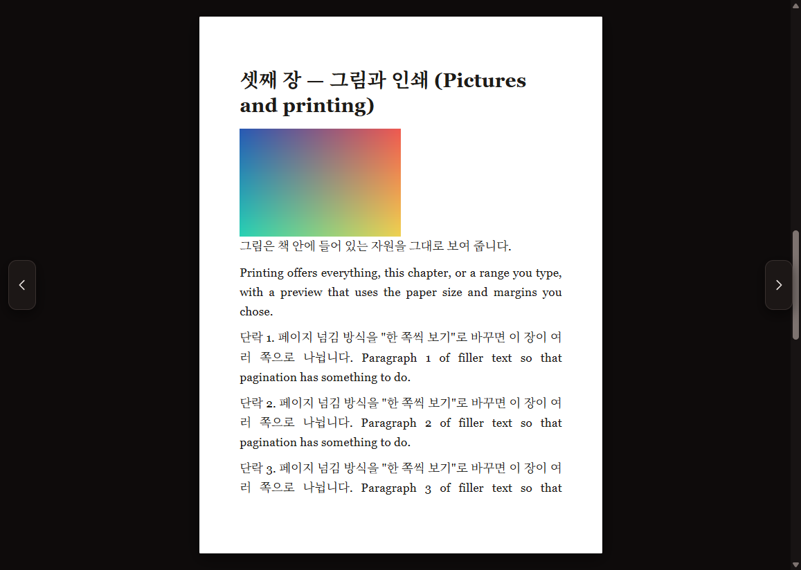
- 넘기는 방법 — 쪽 양옆의 ‹ › 버튼, PageUp / PageDown, ← / →, 마우스 휠, 툴바의 쪽 번호.
- 넘기는 동안 다음 쪽은 미리 그려 두므로, 빠르게 연달아 넘겨도 빈 쪽이 보이지 않습니다.
- Windows의 "애니메이션 줄이기"를 켜 두면 효과 없이 바로 넘어갑니다.
7. 글자 크기 (aA)
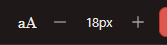
EPUB · MOBI · AZW3 · FB2 · TXT · Markdown · HTML 처럼 흐르는 글을 열면 툴바에 aA [−] 18px [+] 가 나타납니다.
- [−] · [+] 를 누를 때마다 2px 씩 바뀝니다 (10 ~ 40px). 고른 크기는 기억되어 다음 책에도 쓰입니다.
- 쪽을 다시 나누어도 읽던 장과 그 장 안의 위치에 그대로 머뭅니다. 전체 쪽 수만 달라집니다.
- 글자가 쪽에 그려져 있는 PDF · DjVu · 만화 · 그림에서는 이 버튼이 보이지 않습니다. 대신 확대 · 축소를 쓰세요.
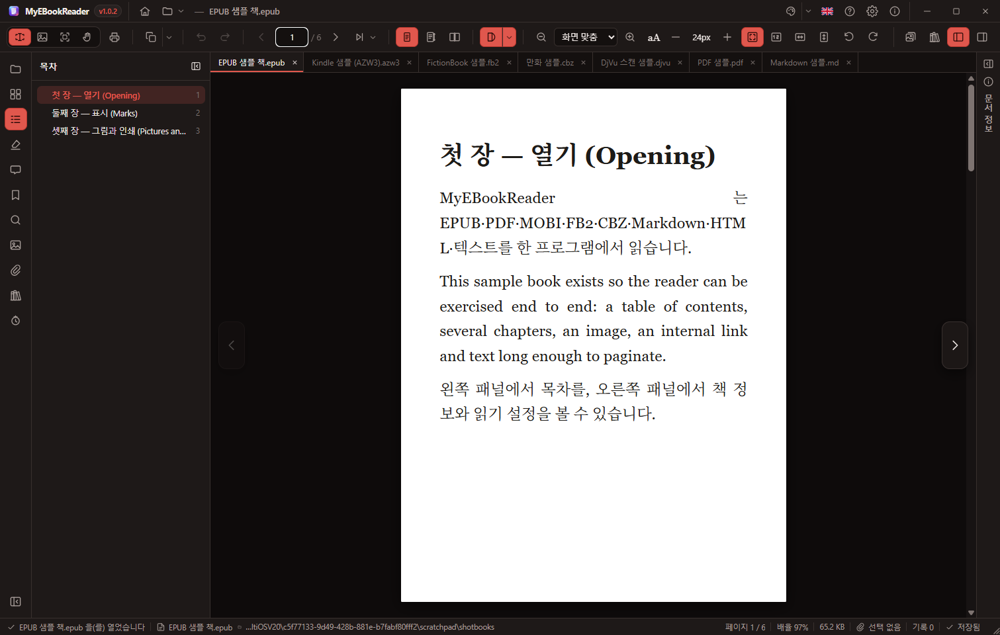
8. 보기 맞춤과 확대
| 버튼 | 보이는 모양 |
|---|---|
| 화면 맞춤 | 쪽 전체가 창 안에 들어옵니다. 책을 열 때 항상 이 모양입니다. |
| 원본 크기 | 100 % (Ctrl+0). |
| 폭 맞춤 · 높이 맞춤 | 쪽의 폭 · 높이를 창에 맞춥니다. |
확대 · 축소는 툴바, Ctrl++ / -, Ctrl+휠. 크게 확대된 쪽은 빈 곳을 끌어 옮깁니다. 페이지 배치는 한 페이지씩 · 이어보기 · 두 쪽 보기 가운데 고르고, 툴바의 ↺ 왼쪽으로 회전 · ↻ 오른쪽으로 회전 버튼으로 90°씩 돌립니다. 창을 줄여도 툴바와 제목 표시줄의 버튼은 모두 보이도록, 창은 그 버튼들이 다 들어가는 폭보다 좁아지지 않습니다.
9. 텍스트 선택과 복사
텍스트 도구(Ctrl+1)로 글자를 끌어 선택하면 PDF와 똑같이 선택 영역이 보이고, Ctrl+C 또는 오른쪽 클릭 메뉴로 복사합니다. 여러 줄도 읽는 순서대로 복사됩니다.
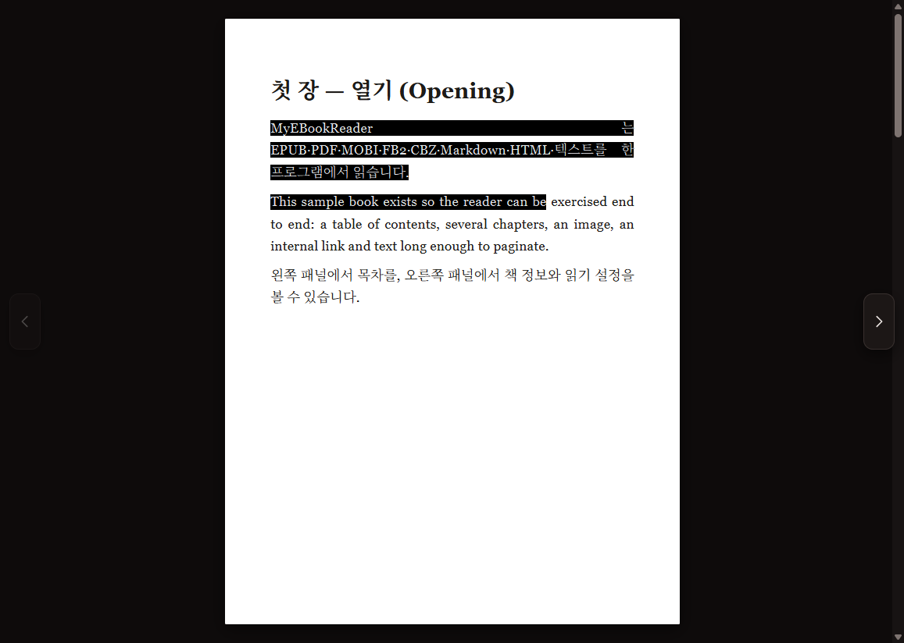
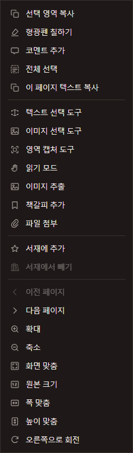
- 모든 오른쪽 클릭 메뉴의 항목에는 아이콘이 붙어 있습니다. 문서 탭(이 탭 닫기 · 다른 탭 모두 닫기 · 서재 · 폴더에서 보기 · 경로 복사)과 검색 칸 같은 글자 입력 칸(잘라내기 · 복사 · 붙여넣기 · 모두 선택)에도 메뉴가 있습니다.
- Ctrl+A — 이 쪽 전체 선택, 이 페이지 텍스트 복사, 파일 ▾ → 텍스트 내보내기(책 전체를
.txt로).
10. 그림 · 영역 복사
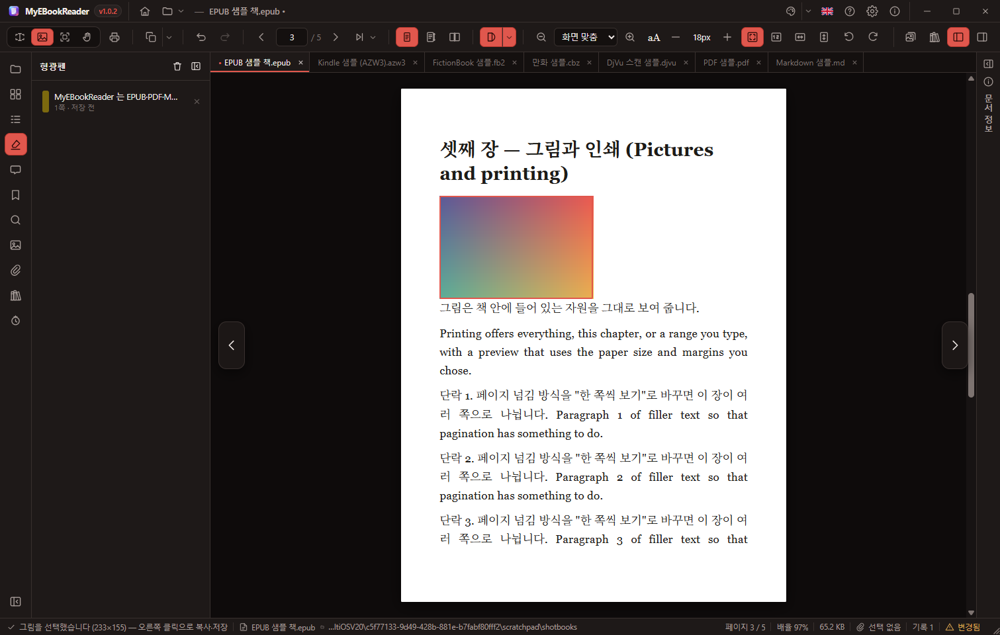
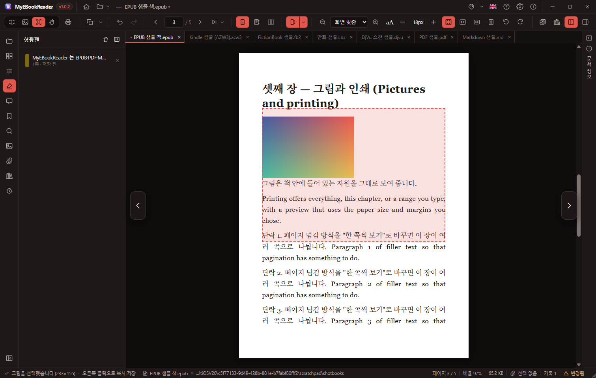
- 이미지 도구(Ctrl+2) — 책 속 그림을 원본 해상도로 꺼냅니다. 만화 · DjVu 는 쪽 전체가 그림 하나입니다.
- 영역 도구(Ctrl+3) — 표 · 수식 · 본문 어디든 사각형으로 잘라 PNG · JPEG · WebP · GIF · BMP 로 저장합니다.
- 읽기 모드(Ctrl+4) — 아무것도 선택하지 않고 읽기만 합니다.
11. 형광펜
- 텍스트 도구로 칠할 글자를 끌어 선택합니다.
- 오른쪽 클릭 메뉴나 복사 버튼 옆 ▾ 메뉴에서 형광펜 칠하기.
- Ctrl+S 로 저장합니다 — PDF는 파일 안에, 다른 형식은 작업 파일(
.ebkvw)에.
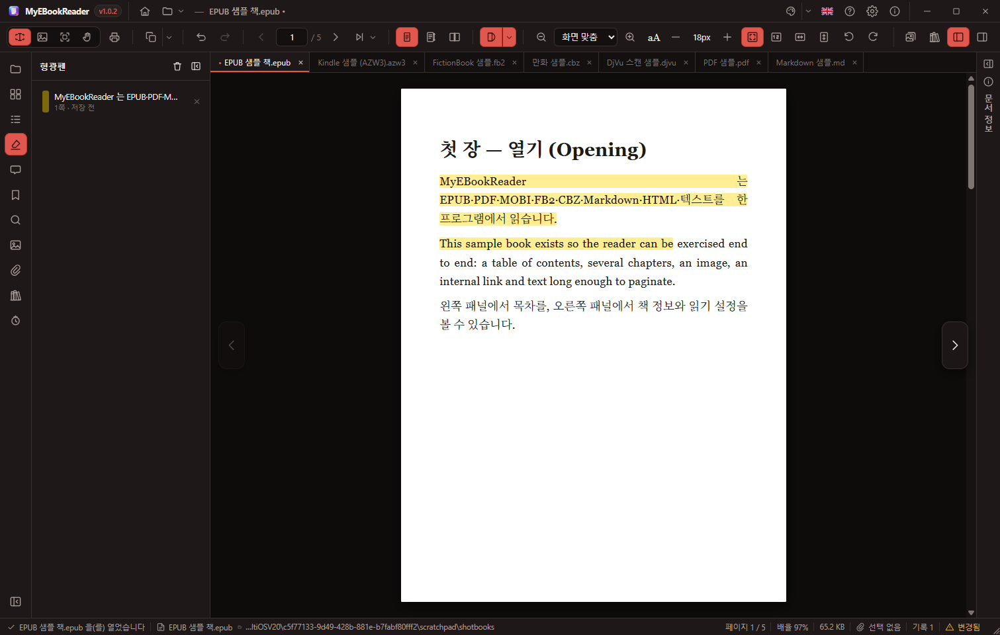
12. 찾기
Ctrl+F 로 왼쪽 찾기 패널을 열고 낱말을 입력합니다. 결과를 누르면 그 쪽으로 넘어가고 쪽 위의 낱말이 강조됩니다. EPUB · MOBI · FB2 · TXT 와 OCR 글자가 있는 DjVu 모두 찾을 수 있습니다.
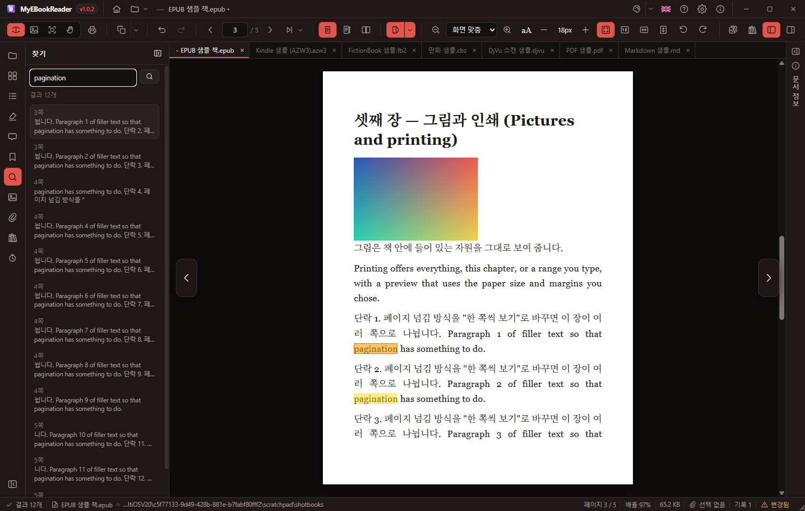
13. 저장
- 저장 (Ctrl+S) — PDF는 형광펜 · 주석 · 책갈피 · 첨부를 열린 PDF 파일에 바로 씁니다. EPUB · MOBI 등은 책 파일을 고치지 않고 작업 파일(
.ebkvw) 로 저장합니다. - 다른 이름으로 저장 — PDF는
문서이름-annotated.pdf로, 다른 형식은 새 작업 파일로. - 작업 파일 — 원본 책 경로, 보던 쪽과 보기, 형광펜 · 책갈피 · 클립 · 첨부를 담습니다. 두 번 누르면 책이 열리며 그대로 복원됩니다. MyPDFViewer의 작업 파일(pdfvw)도 열립니다.
- 저장하지 않은 변경이 있으면 탭이나 창을 닫기 전에 묻습니다.
14. 열어 본 파일
툴바의 열어 본 파일 버튼으로 엽니다. 열어 본 책이 저절로 쌓여 첫 쪽(또는 표지) 그림과 이름으로 모입니다.
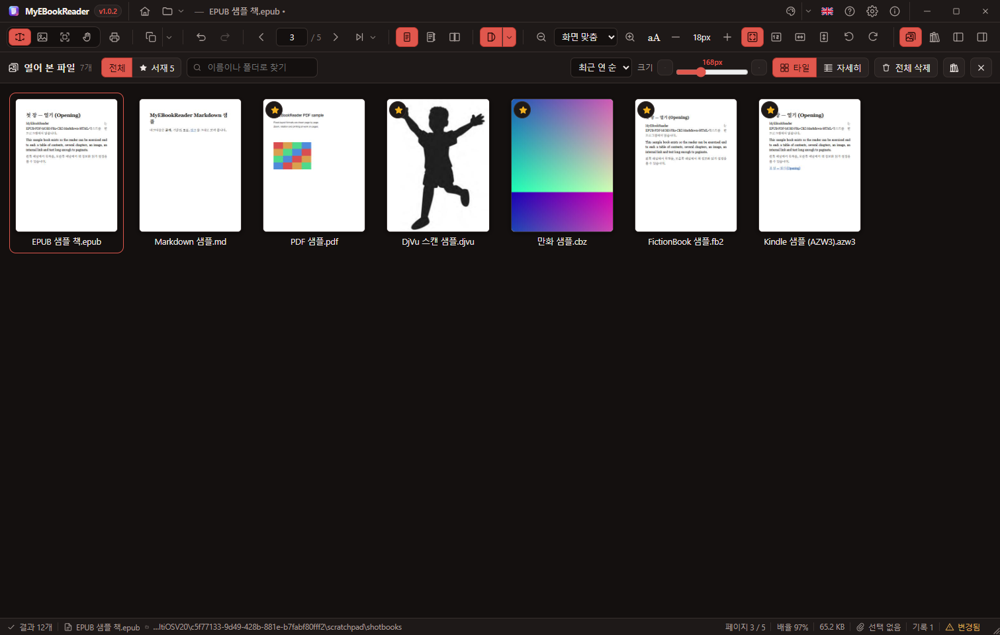
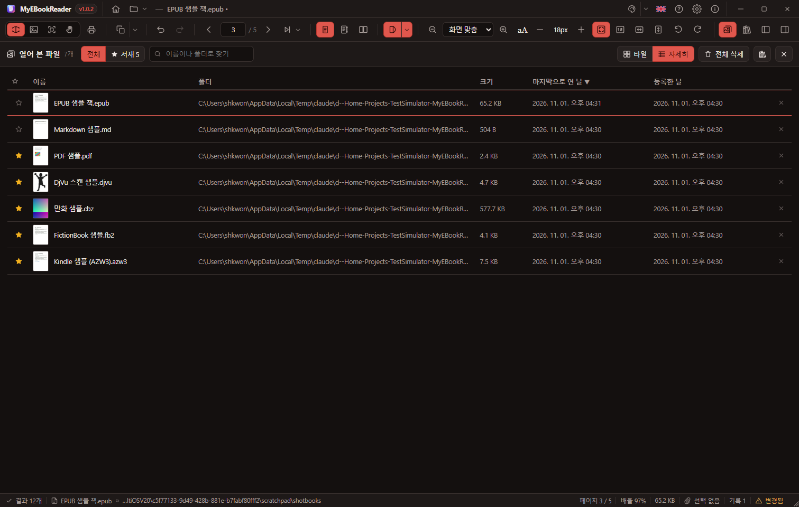
- 🗑 전체 삭제 — 목록을 한 번에 비웁니다. 서재에 넣은 책은 남고, 파일 자체는 지워지지 않습니다.
- 찾기, 전체 / 서재 보기, 최근 연 순 · 이름 · 추가한 순 · 크기 정렬.
15. 서재
아끼는 책을 서재에 추가(카드의 ☆, 오른쪽 클릭 메뉴, 파일 ▾ 의 최근 파일 ☆)하면 툴바의 서재 버튼으로 책장처럼 크게 봅니다.
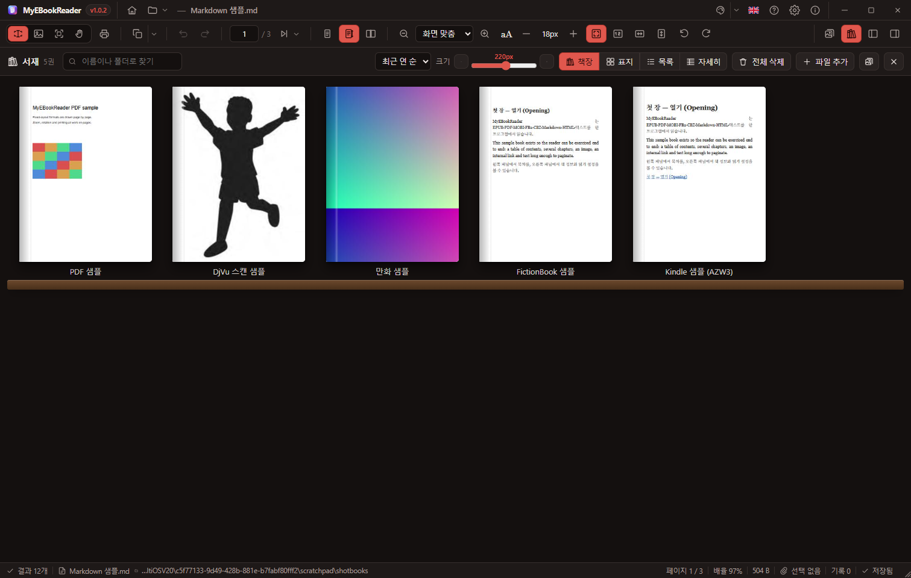
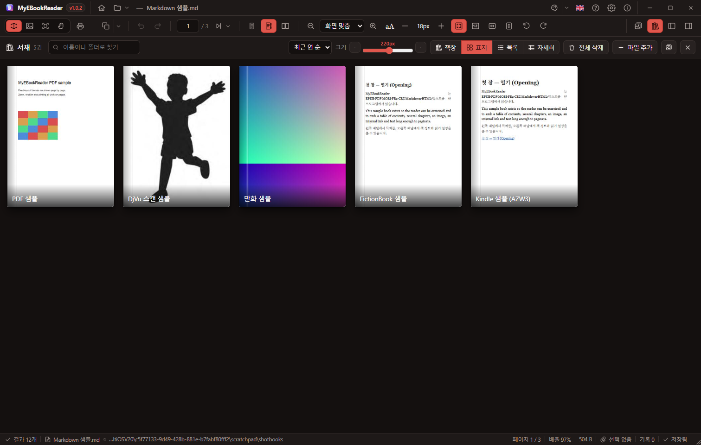
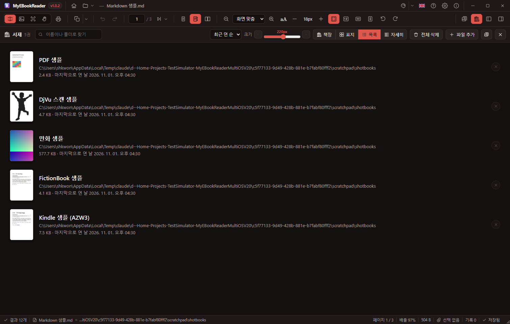
- 책장 · 표지 · 목록 · 자세히 네 가지 보기. 책마다 ✕ 로 빼고, 🗑 전체 삭제 로 서재를 비웁니다 (파일과 [열어 본 파일] 목록은 그대로).
16. 좌측 패널
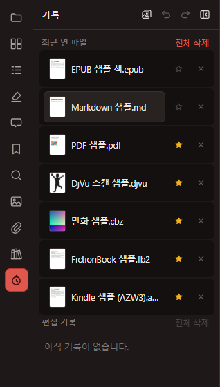
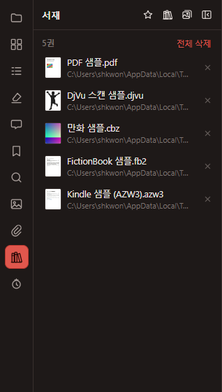
| 탭 | 내용 |
|---|---|
| 폴더 | 드라이브와 폴더 트리, 전자책 파일 |
| 축소판 · 목차 | 쪽 그림과 접히는 목차 (EPUB · MOBI · FB2 의 목차, PDF 책갈피) |
| 형광펜 · 주석 · 책갈피 · 찾기 · 이미지 · 첨부 · 클립 | 각 목록과 그 자리로 이동 |
| 서재 · 기록 | 서재의 책, 최근 연 파일과 편집 기록 — 개별 · 전체 삭제 |
17. 인쇄
툴바의 🖨 인쇄 버튼(선택 도구 바로 오른쪽), 파일 ▾ → 인쇄, 또는 Ctrl+P 로 인쇄 창을 엽니다.
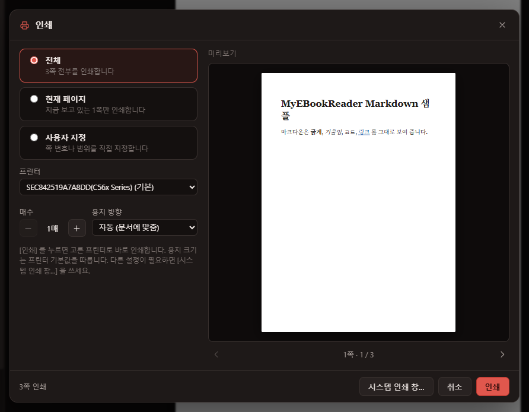
왼쪽 좁은 칸에서 전체 · 현재 쪽 · 사용자 지정(1-5, 8, 11-13) 범위와 프린터 · 매수 · 용지 방향을 고르고, 오른쪽 넓은 칸의 미리보기(인쇄될 쪽만 흰 종이로, 둘레는 배경색으로 보입니다)로 쪽을 확인한 뒤 [인쇄] 를 누르면 바로 인쇄됩니다. EPUB 등은 나누어진 쪽 그대로 인쇄됩니다.
18. 설정
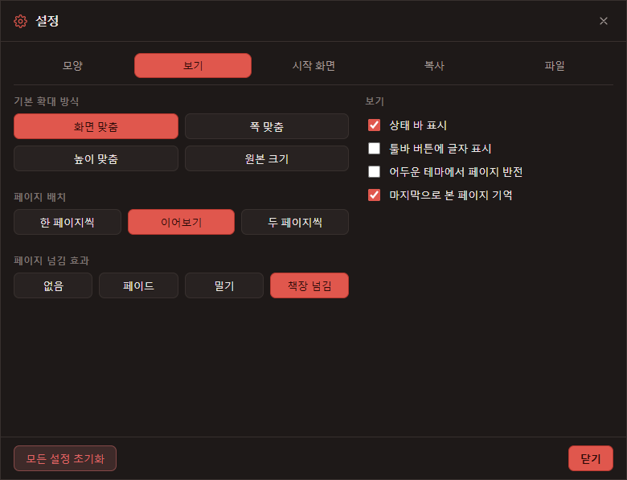
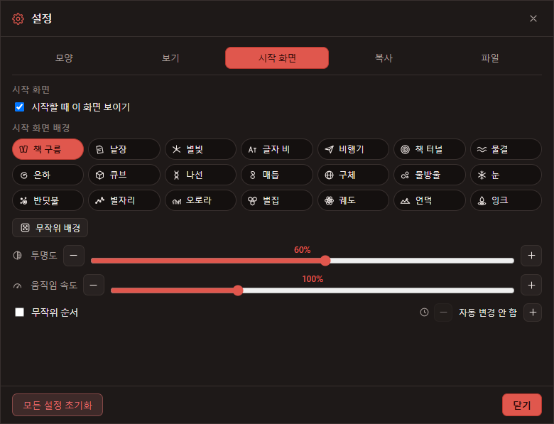
- 모양 — 테마 40가지, 화면 글꼴과 크기. 보기 — 확대 · 배치 · 넘김 효과. 시작 화면 · 복사 · 파일.
- 책 본문 글자 크기는 툴바의 aA 로 바꿉니다 (7장).
- 설정 과 프로그램 정보 는 따로 떨어진 창으로 열립니다. 제목 줄을 끌어 프로그램 창 바깥으로도 옮길 수 있고, 열려 있는 동안 본 창은 입력을 받지 않습니다.
- 오른쪽 클릭 메뉴는 창 가장자리에서 잘리지 않고 프로그램 창 밖으로 이어져 보입니다.
- 수치는 모두 [−] 값 [+] 로 정합니다. 지금 값은 가운데에 단위와 함께, 슬라이더는 막대 양옆에 −/+ 가 있고 값은 막대 위 가운데에 보입니다.
프로그램 정보
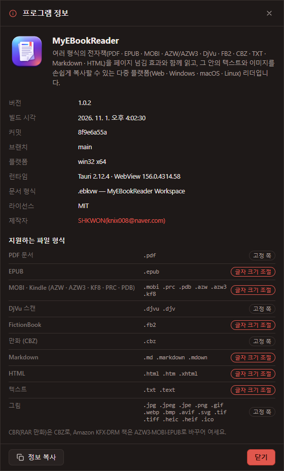
지원하는 형식마다 확장자와, 글자 크기를 바꿀 수 있는 흐르는 글인지 쪽이 고정된 형식인지가 표시됩니다. CBR(RAR 만화)은 CBZ로, Amazon KFX · DRM 책은 AZW3 · MOBI · EPUB로 바꾸어 여세요.
19. 단축키
| 키 | 동작 | 키 | 동작 |
|---|---|---|---|
| Ctrl+O | 열기 | Ctrl+S | 저장 (PDF 안에 / 작업 파일로) |
| PageDown → | 다음 쪽 | PageUp ← | 이전 쪽 |
| Ctrl+1 / 2 / 3 / 4 | 텍스트 / 이미지 / 영역 / 읽기 | Ctrl+Z / Y | 실행 취소 / 다시 실행 |
| Ctrl+C | 선택 복사 | Ctrl+A | 쪽 전체 선택 |
| Ctrl+F | 찾기 | Ctrl+P | 인쇄 |
| Ctrl++ / - / 0 | 확대 / 축소 / 원본 크기 | F9 · F8 | 좌측 패널 · 문서 정보 |
| Ctrl+W · Ctrl+Tab | 탭 닫기 · 다음 탭 | F1 | 이 설명서 |
20. 설치와 데이터
- 설치 파일은
npm run build:win(macOSbuild:mac, Linuxbuild:linux) 으로 만듭니다. - 설치 화면에서 바로 가기와 전자책의 기본 리더로 설정을 고릅니다. 예전 Electron 판(MyEbooks)이 있으면 먼저 지우고, 남은 설정을 지울지 묻습니다.
- 설정 · 최근 파일 · 열어 본 파일 · 서재는
%APPDATA%\MyEBookReader\settings.json에 저장됩니다.